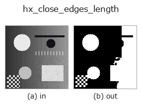

halcon_ext op• Data kinds: image → image
• Call: fullseye.apply(img, "hx_close_edges_length", a=0.5, b=0.5) (2-D model = एक image + दो scalar knobs a,b∈[0,1])
• HALCON समकक्ष: close_edges_length (अर्थ और parameters समझने के लिए HALCON reference उपयोगी है)

*Figure synthetic 128×128 input पर सच में चलाकर मिला output है। बाईं ओर input, दाईं ओर output। Point clouds ऊपर से देखे गए scatter के रूप में (brightness = z), 1-D series line के रूप में, volumes z दिशा में maximum-intensity projection के रूप में, videos बीच के frame के रूप में, complex images amplitude के रूप में, और जो return values चित्र नहीं बन सकते वे स्वयं values के रूप में दिखाए जाते हैं।*
Knob a को बदलकर (0.1 / 0.5 / 0.9, दूसरा knob default पर):
▸ hx_close_edges_length: knob a को बदलने का figure (docs site)
Knob b को बदलकर (0.1 / 0.5 / 0.9, दूसरा knob default पर):
▸ hx_close_edges_length: knob b को बदलने का figure (docs site)
दूसरी images पर भी (synthetic scene / photo / coins। ऊपर की row में inputs, नीचे की row में उनके outputs। Knobs default पर):
▸ hx_close_edges_length: दूसरी images पर output (docs site)
*चौथा column colour (H,W,3) input है। यह op channels को पार किए बिना colour संभालता है (colour channel को तीसरे spatial axis की तरह convolve नहीं करता)।*
close_edges के अलावा, threshold से कम लंबाई (pixels की संख्या) वाले छोटे edge टुकड़े भी हटाता है।
> नीचे का विस्तृत विवरण मूल text में है — सारांश और headings का अनुवाद हो चुका है।
v > a で二値化 → 3×3(8 近傍)構造要素で 1 回 binary_closing → ndimage.label(既定の 4 近傍連結)で連結成分にし、画素数が min_len 未満の成分を落として 0/1 の float 画像で返す。
• a → 二値化しきい値。
• b → 残す最小画素数 min_len = 2 + int(b*20)(2〜22)。
• 成分が 1 つも無ければクロージング結果をそのまま返す。
注意: クロージングの構造要素は固定 3×3 で、hx_close_edges のような幅の調整は無い。ラベリングが 4 近傍のため斜めにつながる 1 画素幅の線は別成分に分かれ、「長さ」が短く数えられて消えやすい。binary_closing は画像外を 0 と扱うので端 1 画素の帯は常に 0 になる。「長さ」は成分の画素数であり幾何学的な線長ではない(塊も長いと数える)。
खाली frame (मापा गया): एक समान brightness वाली image देने पर brightness चाहे जो हो, परिणाम खाली होता है (सभी pixels background 0)। पूरी सफ़ेद हो या पूरी काली, एक जैसा व्यवहार होता है; केवल brightness से कुछ detect नहीं होता।
• gallery2d_halcon_ext family guide
• Sample data catalog (DL URL / license) — 2-D के लिए skimage.data (BSD/public) + synthetic, 3-D के लिए real data sources (Stanford/PDS आदि) के DL URL।
• Operators का स्रोत और संदर्भ — इस op family के मूल research/methods के स्रोत।
• Algorithm का मानक स्रोत (लेखक, वर्ष) और उपयोग ऊपर की family usage guide में दिए गए हैं।
नीचे का program सच में चलता है, यह जाँचा गया है (figure वाला ही input)। Studio की help में यह block buttons बन जाता है, जिनसे इसे वहीं load करके चलाया जा सकता है।
hx_close_edges_length 0.50 0.50
▸ यह pipeline load करें · Load करके चलाएँ
• gallery2d_halcon_ext — py -3.11 examples/gallery2d_halcon_ext.py
image को input के रूप में लेते हैं)identity · gaussian · mean_box · bilateral · unsharp · median · min_filter · max_filter
halcon_ext)hx_gen_circle · hx_gen_ellipse · hx_gen_rectangle2 · hx_gen_checker_region · hx_gen_grid_region · hx_gabor · hx_fit_surface1 · hx_fit_surface2
*Provenance: ops.py — 2D operator registry. यह per-op note tools/opdocs.py md से अपने-आप generate होता है (हाथ से edit न करें)।*
© 2026 Kazufumi Furuse — Fullseye operator documentation. Licensed under Apache-2.0.